- Curated by Paula Pintos
WICKEN, UNITED KINGDOM
- Architects: Studio Morison
- Year: 2020
- Photographs: Charles Emerson

MOTHER... is an artwork by artists Heather and Ivan Morison of Studio Morison that engages with the connections between the natural world and our mental health. The work is inspired by writer Richard Mabey’s book ‘Nature Cure’, in which he recovers from severe depression through walking, watching and writing about the Eastern region’s beautiful and unexplored landscapes.
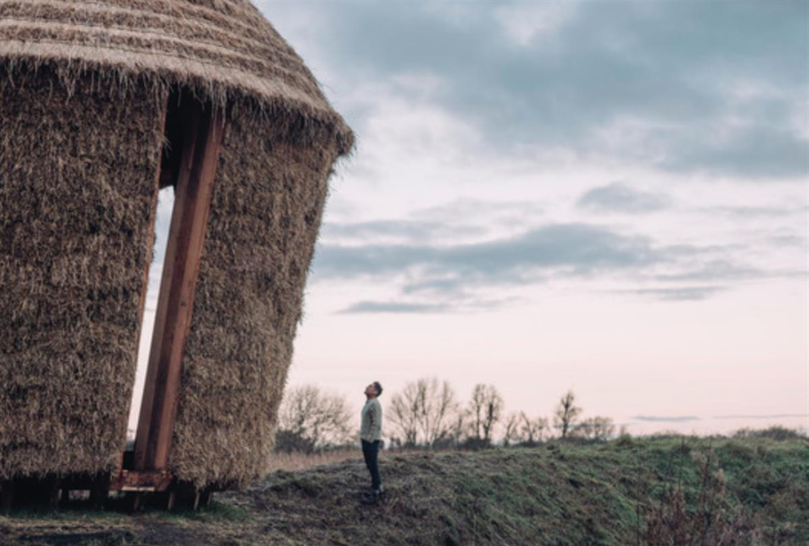
It has been commissioned by Cambridgeshire based Wysing Arts Centre as part of the region-wide arts commissioning programme, New Geographies, which aims to bring contemporary art to unexpected places in the East of England. All locations for artworks were nominated by members of the public – in this case, Wicken Fen suggested for its “sublime peaty landscape”.
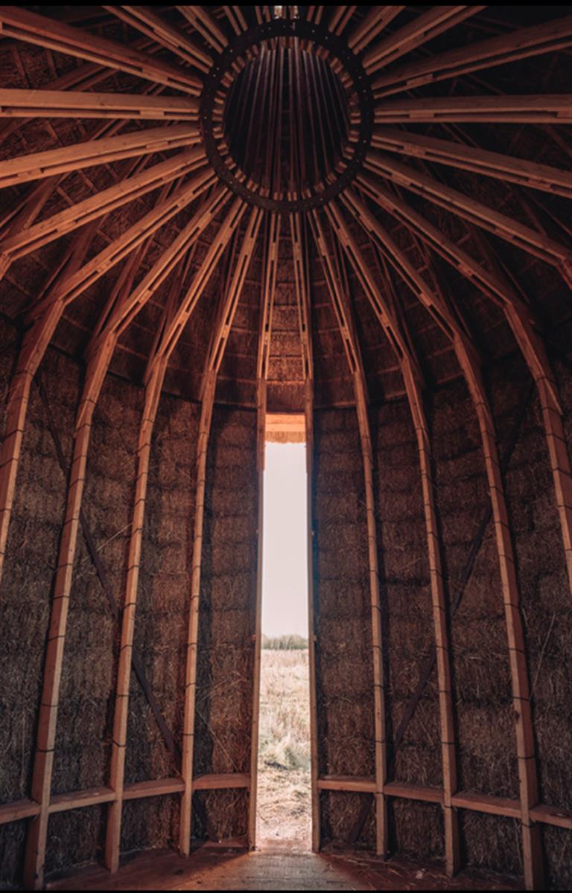
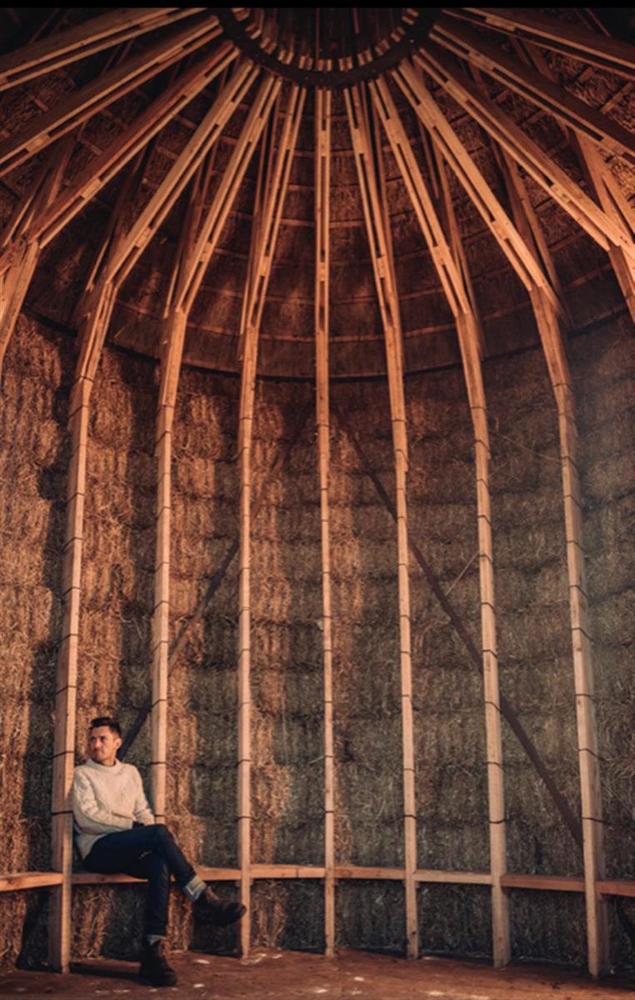
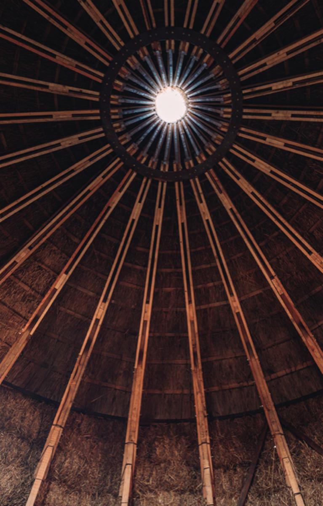
MOTHER... is a sculptural structure that has been created specifically for this important area of wild fenland.
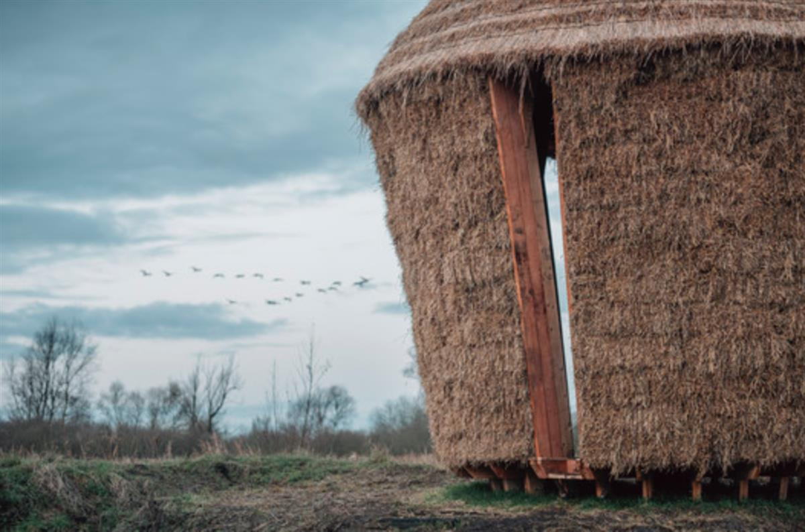
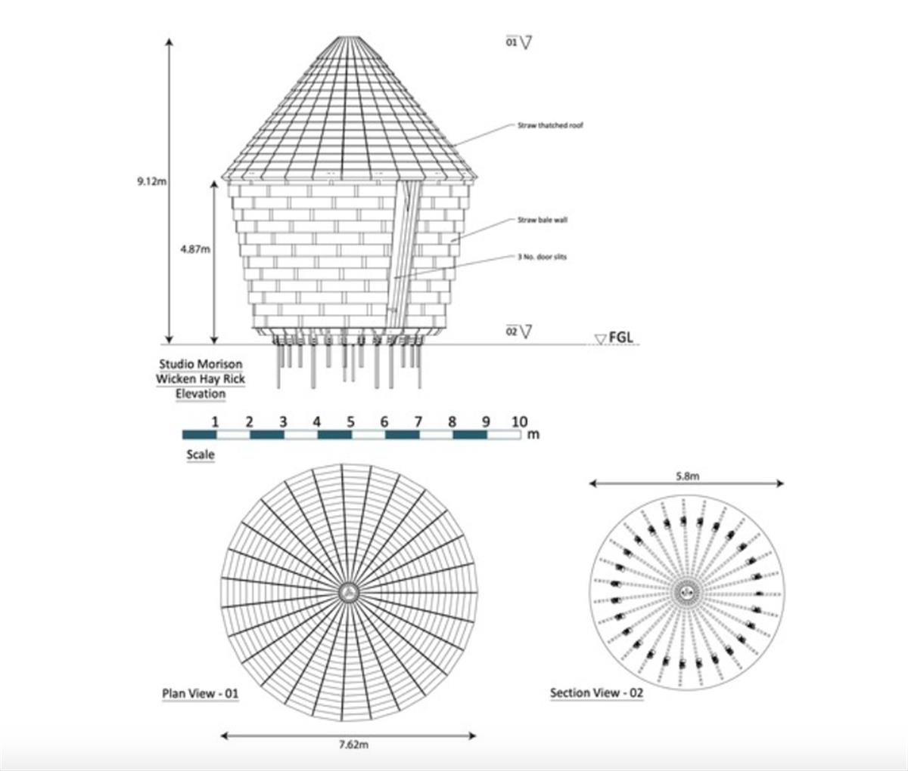
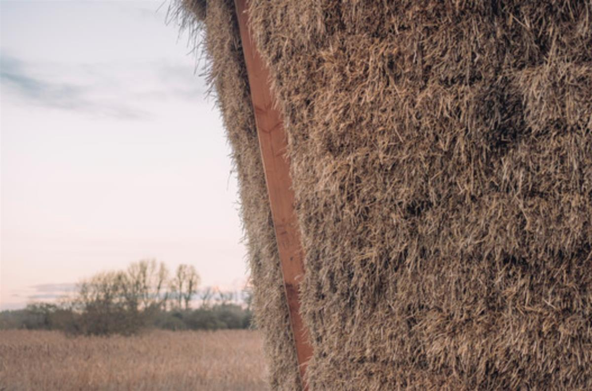
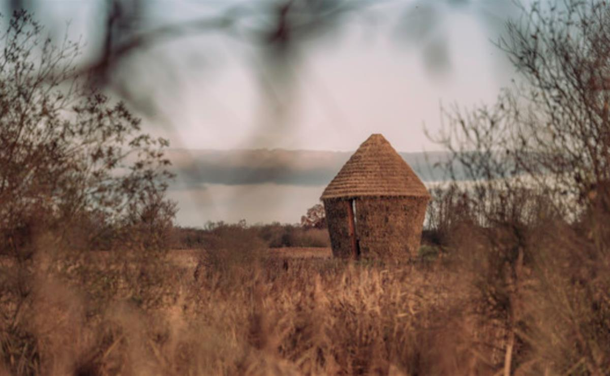
MOTHER... references local building traditions, materials and architectural vernacular to root the structure in the landscape it is a part of. The form is an interpretation of the remarkable hayricks once found dotting this countryside. The timber used in the framing was felled from the artists' own forest and milled by the artists at their workshops. The walls and roof are made from local straw, the thatching of which has been done in the traditional style by a master thatcher whose first job as an apprentice was to thatch a hayrick on this very site. The work, with its deep entranceways, ceiling oculus, and high double-layered conical ceiling, is an architectural space to enter; re-framing visitors’ experience of the landscape of WickenFen, the sky, the light and the materials that surround them.
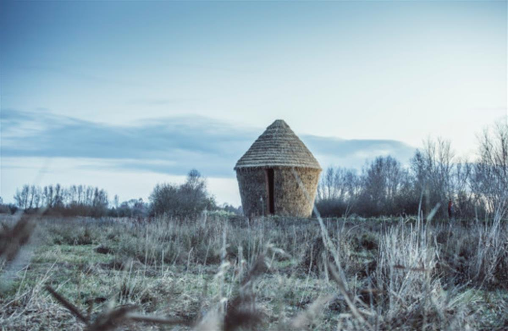
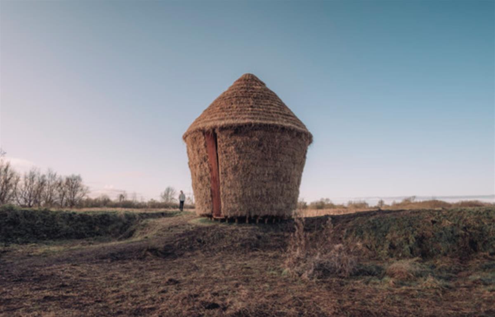
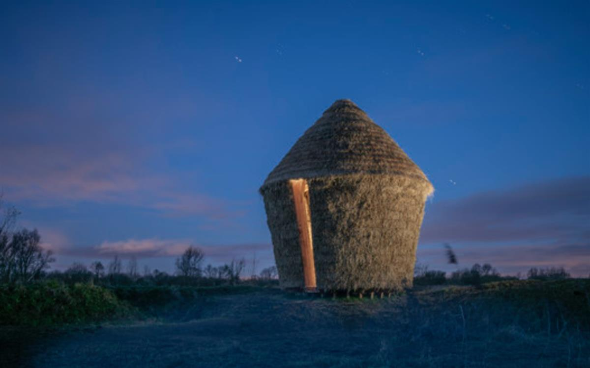
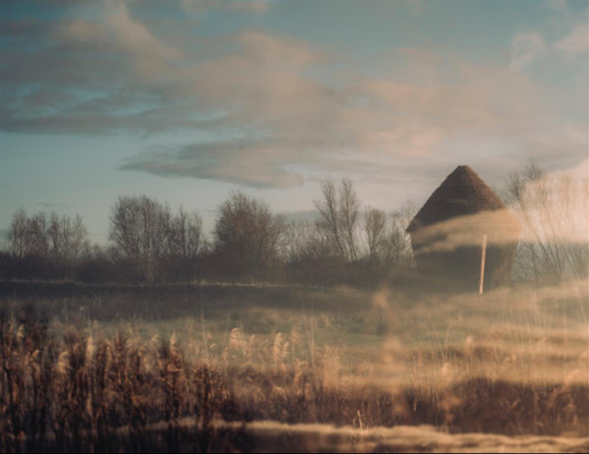
SOURCE: ARCHDAILY